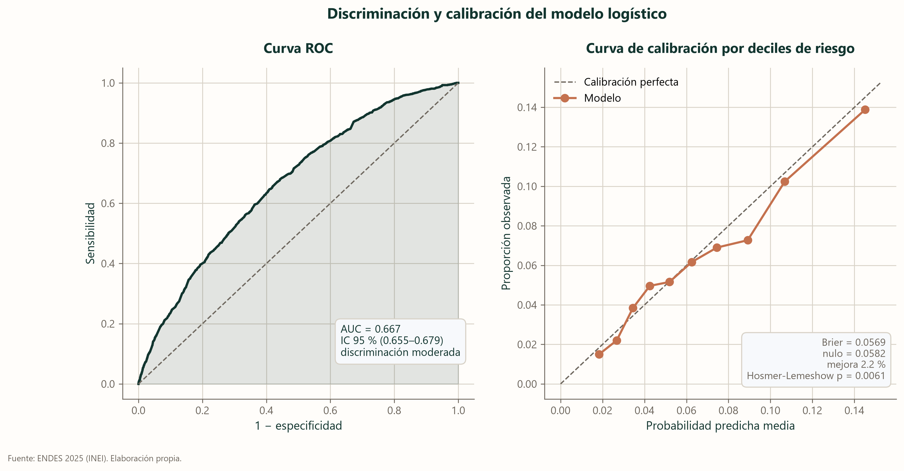

El modelo
Hasta aquí hemos mirado un factor a la vez. Un modelo los mira todos juntos y responde otra pregunta: si dos personas se diferencian solo en una cosa, ¿cuánto cambia eso?
Qué es una regresión logística
Imagina una balanza. Cada característica de una persona (su sexo, su edad, si tiene hipertensión) pone un peso a un lado o al otro. La regresión logística es el procedimiento que decide cuánto pesa cada cosa, mirando a la vez a las 28 553 personas del análisis.
Su resultado, el odds ratio, compara las odds, es decir, la razón entre quienes dan positivo y quienes no. Un valor de 2 significa que esas odds se duplican; uno de 0,5, que se reducen a la mitad; uno de 1, que no cambian. Y lo hace manteniendo lo demás constante, que es justamente lo que no podíamos hacer comparando de a dos. Como la sintomatología depresiva es poco frecuente (7 %), las odds y las prevalencias se parecen, y el odds ratio se lee de forma aproximada como una razón de prevalencias; no es exacto y se aleja cuando la condición es más frecuente (Barros y Hirakata, 2003).
Asociación total y asociación directa
Aquí aparece una decisión que es más conceptual que técnica. Si se supone que beber alcohol lleva a la obesidad, y que la obesidad lleva a la depresión, ¿debemos descontar la obesidad al medir la asociación del alcohol? Ese orden causal es un supuesto: la encuesta no puede comprobarlo.
Depende de qué se quiera saber. Si preguntamos «¿cuánto se asocia beber, por todas las vías?», la respuesta no debe descontarla: la ruta corporal es parte de la asociación. Si preguntamos «¿cuánto se asocia beber por vías que no pasan por el cuerpo?», sí. Son dos preguntas distintas, así que reportamos las dos.
Descontar el peso corporal casi no cambia nada, y eso también es un resultado
Cada fila es un factor medido dos veces. El círculo cuenta toda su asociación con la depresión y el cuadrado, solo la parte que no pasa por el peso corporal, de modo que la separación entre ambos es lo que viaja por esa ruta; si están pegados, el peso no hace de intermediario. En casi todos los casos lo están. La única excepción es la diabetes, donde alrededor de una cuarta parte de la asociación pasa por ahí, si se acepta el orden supuesto. La línea vertical del 1 separa lo que se asocia con más sintomatología de lo que se asocia con menos. Antes de calcular nada comprobamos el primer eslabón: de las cinco exposiciones, solo tres se asocian con la obesidad, y para las otras dos no hay ruta que descontar.

| Exposición | Asociación total | Asociación directa | Lectura |
|---|---|---|---|
| Consumo frecuente de alcohol | 0.83 (0.59–1.15) | 0.83 (0.59–1.16) | Sin mediación apreciable por la vía corporal |
| Consumo problemático de alcohol | 5.96 (3.35–10.59) | 6.07 (3.41–10.82) | Sin mediación apreciable por la vía corporal |
| Fumó en 12 meses | 1.38 (1.04–1.82) | 1.41 (1.07–1.87) | Parte del efecto pasa por la obesidad |
| Hipertensión diagnosticada | 1.37 (1.06–1.76) | 1.45 (1.13–1.84) | Parte del efecto pasa por la obesidad |
| Diabetes diagnosticada | 1.58 (1.12–2.22) | 1.41 (1.00–2.00) | Parte del efecto pasa por la obesidad |
Qué tan bien funciona
El modelo acierta dos de cada tres veces al comparar dos personas al azar
Una curva ROC es como este juego: se toman dos personas al azar, una con sintomatología depresiva y otra sin ella, y se le pregunta al modelo cuál es cuál. Mientras más se despega la línea de la diagonal, mejor distingue, y un AUC de 0,67 quiere decir que acierta dos de cada tres veces: por encima del azar, que sería 0,5, y lejos de la certeza. El panel de la derecha mira otra cosa, la calibración: cuando el modelo dice «10 %», debería acertar alrededor del 10 % de las veces, y que los puntos sigan la diagonal significa que sus probabilidades son creíbles aunque no distinga con mucha finura. Con esa precisión se puede decidir dónde hace falta un servicio de salud mental; para saber cómo está una persona concreta hace falta hablar con ella.

| Qué se evaluó | Resultado | Interpretación |
|---|---|---|
| Eventos por variable (EPV) | 104.2 | Holgado |
| Discriminación (AUC) | 0.667 (0.655–0.679) | discriminación moderada |
| Bondad de ajuste (Hosmer-Lemeshow) | χ² = 21.42, gl = 8, p = 0.0061 | La calibración se juzga por la curva y por el Brier, no por esta prueba: con decenas de miles de casos detecta desviaciones que no cambian ninguna decisión |
| Calibración (Brier) | 0.0569 | Brier 0.0569 frente a 0.0582 del modelo nulo (mejora del 2.2 %) |
| Linealidad del logit en edad (Box-Tidwell) | p = 0.0000 | El logit no es lineal en esta variable: hay que usar splines o categorizarla |
| Sensibilidad (corte en la prevalencia) | 0.672 | Umbral 0.0621; el modelo está calibrado, así que el corte en la prevalencia es interpretable |
| Especificidad (mismo corte) | 0.564 | Compromiso propio de un tamizaje: capta más casos a costa de más falsos positivos |
| AUC-PR | 0.1169 | Frente a 0.0621 del azar: 1.9 veces mejor |
| Exactitud del modelo de referencia | 0.938 | Punto de comparación: responder «nadie» acierta el 93 % |